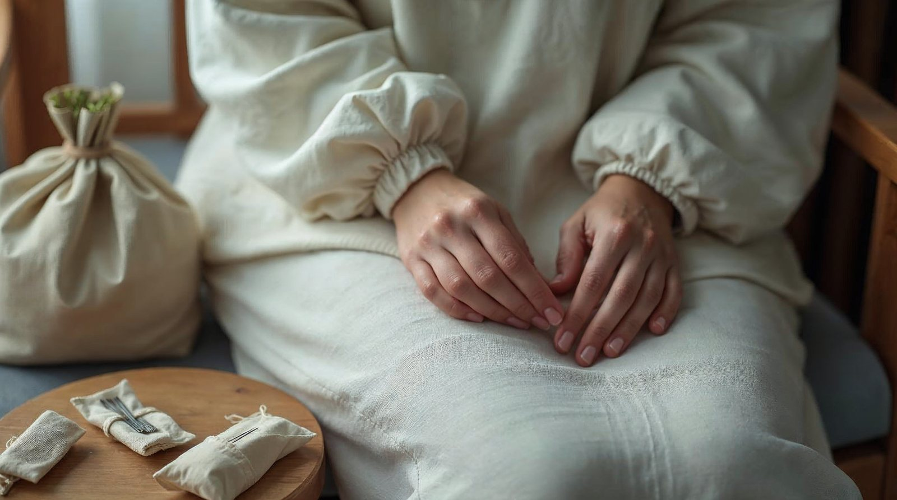

이종호 한의사 감수좋은꿈참사랑한의원 대표원장 (한의사 면허번호 19769)발행 2026-11-23 · 수정 2026-11-25
이 글의 차례
통증을 말할 때 "여기가 아파요"라고 손으로 짚어 주시는 것만으로도 많은 정보가 됩니다. 아픈 곳이 근육 쪽인지 관절 쪽인지, 누르면 아픈지 움직일 때 아픈지 스스로 나눠 보면 어떤 확인이 먼저 필요한지 정하기 쉬워집니다.
왜 이런 불편이 생길 수 있나요
- 근육 통증은 많이 쓴 다음 날 뭉치고 당기며, 누르면 아픈 경우가 많습니다.
- 관절 통증은 마디 주변이 뻣뻣하고 움직이는 범위가 줄어드는 형태로 오는 경우가 많습니다.
- 힘줄은 근육과 뼈를 잇는 부분이라 특정 동작에서 찌릿하게 아프기도 합니다.
- 같은 자리라도 아침에 굳어서 아픈지, 저녁에 많이 쓴 뒤 아픈지에 따라 먼저 살필 것이 달라집니다.
- 관절이 붓고 뜨거운 경우에는 염증이나 다른 질환을 먼저 확인해야 할 때가 있습니다.
먼저 이렇게 여쭙니다
- 아픈 곳이 살이 많은 부분인가요, 뼈가 만나는 마디인가요?
- 손으로 누르면 아픈가요, 움직일 때만 아픈가요?
- 붓거나 열이 나거나 붉어진 곳이 있나요?
- 아침에 뻣뻣한 시간이 있다면 얼마나 이어지나요?
- 아프기 시작한 날 특별히 한 일이 있나요?
예를 들면 이렇게 말할 수 있습니다
- 예를 들어 마우스를 오래 쓰는 직장인이 팔꿈치 바깥쪽이 아프다면, 뼈가 튀어나온 자리 바로 아래를 누르면 아프고 컵을 들 때 찌릿하다는 식으로 짚는 자리와 아픈 동작을 함께 말해 주시면 힘줄 쪽인지 살피는 단서가 됩니다.
- 예를 들어 이삿짐을 나른 다음 날 허리 양옆의 살이 많은 곳이 넓게 뻐근하고 누르면 아프다면, 근육을 많이 쓴 뒤의 뻐근함인 경우가 많습니다. 다만 다리로 저림이 내려간다면 따로 꼭 말씀해 주세요.
- 예를 들어 어르신이 아침마다 손가락 마디가 굳고 마디 자체가 붓는 느낌이라면, 살보다 뼈가 만나는 자리가 불편한 경우입니다. 몇 개의 마디가, 양손에 비슷하게, 아침에 몇 분 동안 굳는지 적어 오시면 어떤 확인이 먼저인지 정하기 쉽습니다.
스스로 점검해 보세요
- 아픈 곳을 한 손가락으로 짚을 수 있는지, 손바닥으로 넓게 문지르게 되는지
- 누르면 아픈지, 누를 때는 괜찮고 움직일 때만 아픈지
- 계단 내려가기나 컵 들기처럼 특정 동작 한 가지에서만 아픈지
- 많이 쓴 다음 날 시작됐고 며칠 사이 조금씩 덜해지는지
- 마디가 붓거나 뜨겁고 붉은 빛을 띠는지
- 아침에 굳는 시간이 길고 여러 관절이 함께 그런지
- 가만히 있을 때나 밤에도 계속 아픈지
앞의 네 가지에 대한 답을 적어 오시면 근육·힘줄 쪽인지 관절 쪽인지 단서를 모으는 데 도움이 됩니다. 뒤의 세 가지에 해당하면 먼저 확인이 필요한 경우일 수 있어 진료에서 먼저 말씀해 주세요.
일상에서 먼저 해 볼 수 있는 것
- 많이 쓴 근육은 다음 날 가볍게 움직이며 풀고, 아픈 동작은 며칠 줄이기
- 갑자기 붓고 열감이 있으면 차갑게, 뻐근하고 굳은 느낌이면 따뜻하게 찜질하기
- 같은 동작을 반복하는 일은 중간중간 쉬는 시간 두기
- 아침에 뻣뻣하다면 일어나기 전 누운 채로 관절을 천천히 움직여 보기
- 아픈 자리를 펜으로 작게 표시하거나 사진으로 찍어 두고, 며칠 사이 범위가 넓어지는지 좁아지는지 비교하기
예를 들어 무릎 앞쪽이 아프다면 계단을 오를 때와 내려갈 때, 오래 앉았다 일어날 때 중 언제 아픈지 하루씩 나눠 적어 보세요. 같은 동작에서 반복되면 그 동작을 진료실에서 직접 보여 주시면 됩니다.

한의원에서 함께 살필 수 있는 경우
- 많이 쓴 다음 날 근육이 뭉치고 당기는 경우 근육 긴장과 사용 습관을 함께 살핍니다.
- 관절 주변이 뻐근하고 움직임이 줄어든 경우 관절 주변 근육과 자세를 함께 살핍니다.
- 날씨가 추워지면 몸이 굳고 불편한 경우 몸의 온기와 하루의 움직임을 함께 살핍니다.
첫 방문은 이렇게 진행합니다
좋은꿈참사랑한의원의 첫 진료는 대체로 아래 순서로 진행합니다.
- 이야기 듣기: 언제, 무엇을 하다 아프기 시작했는지, 누를 때·움직일 때·가만히 있을 때 중 언제 아픈지 먼저 듣습니다.
- 맥과 혀, 배 살피기: 모든 분께 맥을 짚고 혀와 배를 살펴 잠과 피로, 몸의 온기 같은 바탕 상태를 함께 봅니다.
- 짚어 보고 움직여 보기: 아픈 자리를 직접 짚어 주시면 그 주변을 눌러 보고, 아프게 만드는 동작을 함께 해 보며 근육 쪽인지 관절 쪽인지 단서를 모읍니다.
- 필요하면 초음파: 필요하다고 판단될 때 초음파로 힘줄과 근육, 관절 주변의 붓기를 살핍니다.
- 방향 정하기: 상태에 맞춰 침·약침·추나 등을 정하고, 힘줄 쪽 통증이 오래간다면 체외충격파를 쓸지도 상의합니다. 귀가 전에는 집에서 피할 동작과 다음에 확인할 움직임을 알려 드립니다.
이렇게 기록해 오시면 상담이 쉬워집니다
- 아픈 곳을 몸 그림에 표시하거나 사진으로 남긴 것
- 누를 때, 움직일 때, 가만히 있을 때 중 언제 아픈지
- 아프게 만든 동작이나 일
- 붓기나 열감이 있었던 날의 사진
얼마나 지켜보고, 언제 상담하면 좋을까요
- 많이 쓴 뒤 생긴 근육 뻐근함은 아픈 동작을 줄이고 가볍게 움직이며 며칠에서 1주쯤 지켜볼 수 있는 경우가 많습니다.
- 1~2주가 지나도 줄지 않거나 같은 동작에서 아픈 일이 되풀이되면 상담을 받아 보세요. 힘줄 쪽 통증은 쉬었다가도 같은 동작에서 다시 아픈 경우가 있어 그 동작을 적어 오시면 도움이 됩니다.
- 관절이 붓고 뜨겁거나, 아침에 여러 관절이 한 시간 넘게 굳는 일이 몇 주째 이어지면 내과·류마티스내과 확인을 먼저 권합니다.
- 넘어진 뒤 체중을 싣지 못하거나 관절 모양이 달라 보이면 지켜보지 말고 바로 정형외과나 응급실로 가세요.
이런 증상은 먼저 확인이 필요합니다
- 관절이 갑자기 붓고 뜨겁고 열이 나는 경우
- 넘어지거나 부딪친 뒤 체중을 싣기 어려운 경우
- 여러 관절이 아침마다 한 시간 넘게 굳는 일이 몇 주째 이어지는 경우
- 밤에도 쉬지 않고 아프며 체중이 줄어드는 경우
- 아픈 부위의 피부가 빨갛게 번지며 열이 나는 경우
- 팔이나 다리로 저림, 힘 빠짐이 함께 있는 경우
복용 중인 약은 처방한 의사와 상의 없이 줄이거나 끊지 않습니다.
관련 글
- 관절이 아플 때 초음파로 무엇을 확인하고, 무엇은 확인하기 어려운가요?
- 초음파 화면에서는 무엇을 보나요?
- 한파가 오면 무릎과 손가락 관절이 시리고 뻣뻣한 것은 왜 그런가요?

여쭙는 것
- 아픈 곳이 살이 많은 부분인가요, 뼈가 만나는 마디인가요?
- 손으로 누르면 아픈가요, 움직일 때만 아픈가요?
- 붓거나 열이 나거나 붉어진 곳이 있나요?
생활에서 해 볼 것
- 많이 쓴 근육은 다음 날 가볍게 움직이며 풀고, 아픈 동작은 며칠 줄이기
- 갑자기 붓고 열감이 있으면 차갑게, 뻐근하고 굳은 느낌이면 따뜻하게 찜질하기
- 같은 동작을 반복하는 일은 중간중간 쉬는 시간 두기
한의원에서 함께 살필 것
- 많이 쓴 다음 날 근육이 뭉치고 당기는 경우 근육 긴장과 사용 습관을 함께 살핍니다.
- 관절 주변이 뻐근하고 움직임이 줄어든 경우 관절 주변 근육과 자세를 함께 살핍니다.
- 날씨가 추워지면 몸이 굳고 불편한 경우 몸의 온기와 하루의 움직임을 함께 살핍니다.
먼저 확인이 필요한 신호
- 관절이 갑자기 붓고 뜨겁고 열이 나는 경우
- 넘어지거나 부딪친 뒤 체중을 싣기 어려운 경우
- 여러 관절이 아침마다 한 시간 넘게 굳는 일이 몇 주째 이어지는 경우
한눈에 보는 표
| 구분 | 핵심 |
|---|---|
| 여쭙는 것 | 아픈 곳이 살이 많은 부분인가요, 뼈가 만나는 마디인가요? 손으로 누르면 아픈가요, 움직일 때만 아픈가요? |
| 생활에서 해 볼 것 | 많이 쓴 근육은 다음 날 가볍게 움직이며 풀고, 아픈 동작은 며칠 줄이기 갑자기 붓고 열감이 있으면 차갑게, 뻐근하고 굳은 느낌이면 따뜻하게 찜질하기 |
| 한의원에서 함께 살필 것 | 많이 쓴 다음 날 근육이 뭉치고 당기는 경우 근육 긴장과 사용 습관을 함께 살핍니다. 관절 주변이 뻐근하고 움직임이 줄어든 경우 관절 주변 근육과 자세를 함께 살핍니다. |
| 먼저 확인이 필요한 신호 | 관절이 갑자기 붓고 뜨겁고 열이 나는 경우 넘어지거나 부딪친 뒤 체중을 싣기 어려운 경우 |
자주 묻는 질문
아픈 곳이 계속 옮겨 다니면 어떻게 말하나요?
옮겨 다닌 순서와 날짜를 적어 오시면 됩니다. 어디가 오래 아팠는지도 함께 알려 주세요.
엑스레이나 초음파 결과가 있으면요?
최근 검사 결과가 있다면 가져와 주세요. 이야기를 이어 가는 데 도움이 됩니다.
한의원에서도 초음파로 볼 수 있나요?
필요하다고 판단될 때 좋은꿈참사랑한의원에서 초음파로 아픈 부위를 함께 살펴봅니다. 영상 판독이나 뼈·관절 깊은 곳의 확인이 필요하면 영상 검사가 가능한 의료기관을 안내합니다.
아픈 곳이 두 군데 이상이면 어떻게 말하나요?
가장 불편한 곳부터 순서를 정해 말씀해 주시고, 한 곳이 아플 때 다른 곳도 함께 아픈지, 따로 아픈지도 알려 주세요.
좋은꿈참사랑한의원은 재진 때 지난번 이야기부터 이어서 여쭙니다. 진료시간과 예약은 오시는 길에서 확인하세요.
어디서 상담받을 수 있나요?
좋은꿈참사랑한의원은 서울 동작구 만양로2길 2 신성빌딩 3층·5층(서울 동작구 상도동, 7호선 상도역 3번 출구 근처)에 있습니다. 한의사 3명(이종호 대표원장, 조영기 수석진료원장, 정원영 진료원장)이 진료합니다. 진료시간은 평일 09:30~20:00(점심 13:00~14:00), 토·일·공휴일 09:30~15:00이며, 방문 전 전화로 확인을 권합니다. 예약은 네이버 예약, 카카오톡 상담, 전화 02-815-7510로 받습니다.
이 글은 일반적인 건강 정보이며 개인의 진단이나 치료를 대신하지 않습니다. 증상이 있거나 복용 중인 약이 있다면 진료를 통해 확인하세요. 치료 효과는 개인마다 다를 수 있습니다.
작성 기준: 일반적으로 알려져 있는 건강 정보를 참고해 정리했습니다(대표원장 감수). 증상 기록은 1~2주 동안 하루 1회, 비슷한 시간에 적어 오시면 지난 상태와 비교하기 쉽습니다.